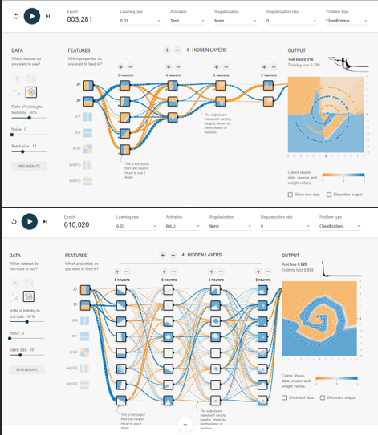

Project 1: Mapping the AI Landscape: A Framework for Algorithm Selection
The Challenge: Selecting the correct learning style and architecture is the most critical step in solving real-world problems. This project provides a comprehensive visual and technical framework for categorizing algorithms based on their learning style, application domain, and task functionality.

Domain-Specific Implementations
I have mapped the most effective architectures across the four pillars of modern industry applications:
| Domain | Core Algorithms | Primary Use Case |
|---|---|---|
| Supervised Learning | Random Forests, Gradient Boosting (XGBoost), Decision Trees | Predictive analytics, risk assessment, and financial forecasting with labeled data. |
| Unsupervised Learning | K-Means Clustering, Principal Component Analysis (PCA), Hierarchical Clustering | Customer segmentation, Anomaly detection, and Data exploration. |
| Deep Learning | Convolutional Neural Networks (CNN), Recurrent Neural Networks (RNN), Transformers (BERT, GPT) | Computer vision, Speech recognition, and Language translation. |
| Generative AI | Diffusion Models, GANs, Large Language Models (LLMs) | Synthetic data creation, innovative content generation, and image synthesis. |
This artifact presents a visual framework of major machine learning algorithm categories and their primary application domains. Understanding how different algorithms align with specific problem types is critical when designing AI systems. For example, tree-based models often perform well with structured tabular data, while convolutional neural networks dominate computer vision tasks. More recently, transformer architectures have revolutionized natural language processing and generative AI applications. Creating this framework strengthened my understanding of the relationship between algorithm design and real-world AI applications. As an aspiring AI practitioner, this knowledge enables me to select appropriate models when solving practical problems across domains such as analytics, vision systems, and generative AI platforms.
Project 2: Mapping Non-Linear Logic in Neural Architectures
Context: This project serves as a technical demonstration of model convergence. Using the high-complexity "Spiral" dataset, I mapped how data flows through a network and identified the specific mechanical failures that lead to model plateaus.

The Mechanics of the "Black Box"
| Component | Strategic Role |
|---|---|
| Layers & Neurons | The computational backbone. Proper scaling of hidden layers prevents the "Information Bottleneck" effect. |
| Weights & Optimization | Weights quantify connection strength; algorithms like SGD or Adam update these based on the Loss Function. |
| Activation Functions | The engine of non-linearity. ReLU and Tanh enable the model to approximate complex, non-linear functions. |
Solution: By analyzing the relationship between the Tanh activation function and the gradient descent process, I determined that widening the hidden layers from 2 to 8 neurons allowed the model to maintain the representational capacity needed to "wrap" the spiral armatures perfectly.
Solving for the spiral isn't just about training—it's about architecture design. This exercise reinforced my understanding of how low-level algorithmic choices impact high-level network deployment. Whether configuring a Linux environment or building a multi-layer perceptron, success is found in the precise tuning of the underlying infrastructure.
Project 3 - Training Large Language Models: Architecture, Pipeline, and Cost Analysis
Context: A visual and analytical breakdown of how modern generative AI models are trained, aligned, and deployed—and why doing so requires massive investments in data, compute, energy, time, and engineering expertise.
Overview: This project explores the end-to-end training lifecycle of large language models such as GPT, Claude, Gemini, and LLaMA. The project focuses on both the technical pipeline and the operational economics of LLM training. Rather than treating generative AI as a black box, I broke the process into clear stages shown in the Figure below.

Key Resource Insights
In my analysis of models like Meta's LLaMA 3, I identified the following five critical cost drivers that impact the deployment lifecycle of AI:
- Data: collection, licensing, filtering, storage, and processing.
- Compute: large-scale GPU or TPU clusters used for training.
- Electricity: electricity required to run high-performance hardware continuously.
- Time: extended training cycles, experimentation, and iteration.
- Talent: researchers, ML engineers, data engineers, and infrastructure teams.
This project helped me move beyond simply using generative AI tools and toward understanding the infrastructure decisions behind them. It reflects my interest in the deployment, scaling, and operational side of AI systems—especially how architectural choices, cost constraints, and training strategies affect real-world implementation. The final artifact is a visual graphic designed to make the training process of large language models easier to understand for both technical and non-technical audiences. It presents the major stages of model development and highlights the cost significance of compute, data, energy, and time in a way that is clear, practical, and portfolio-ready. .